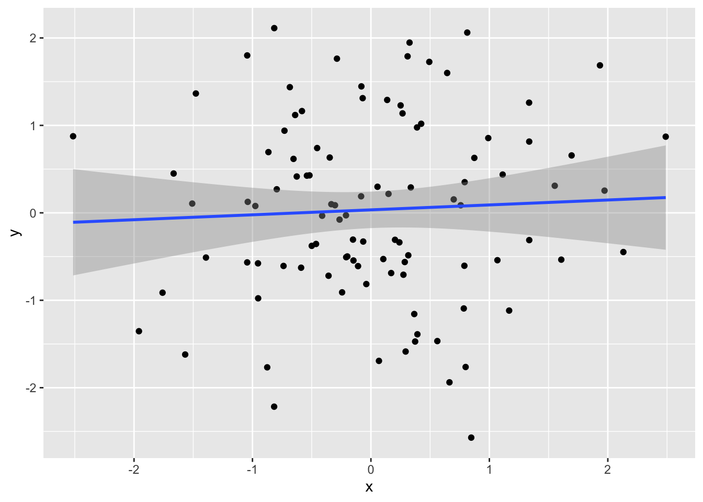
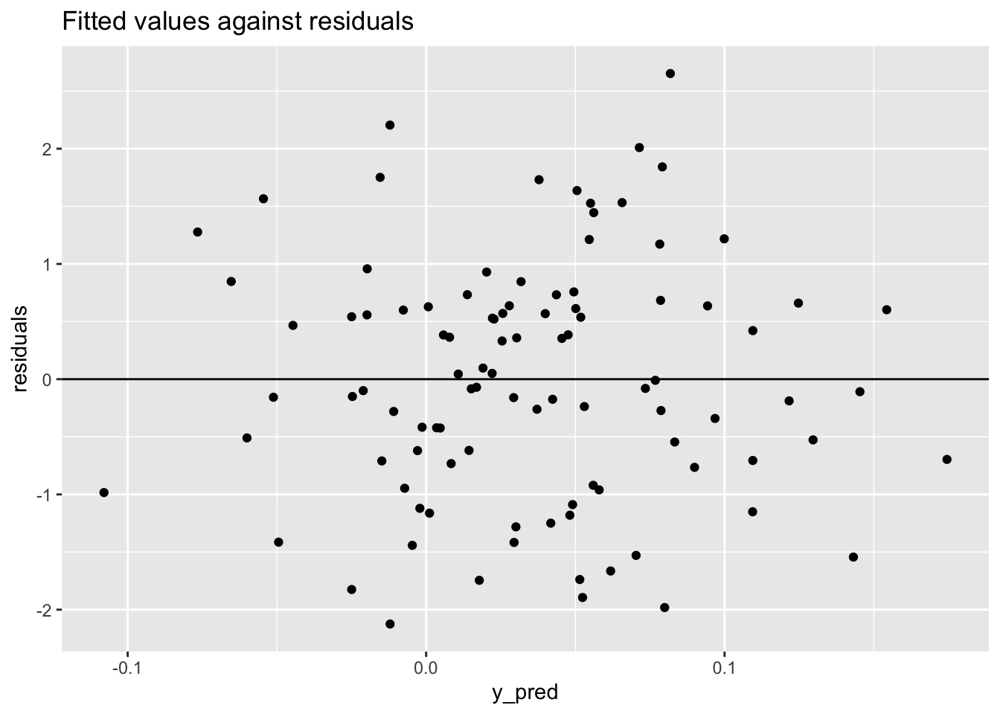
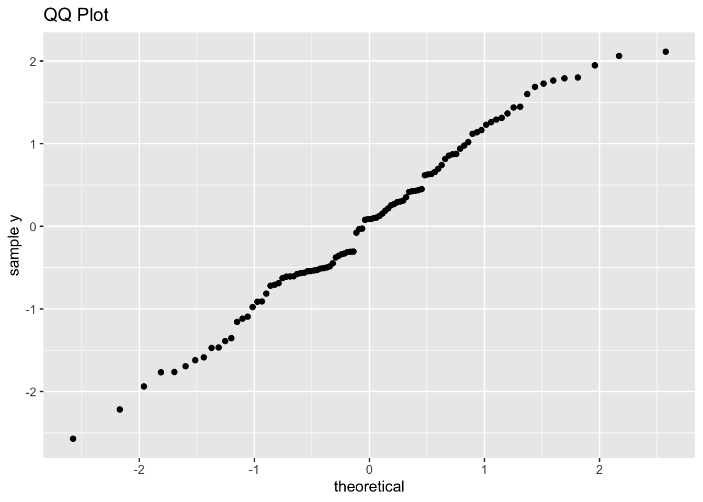

library(tidyverse)
library(corrr)
set.seed(5)
n <- 100
# simulate standard normal
mu <- c(0, 0)
# Since the standard deviations of each distribution are 1
# the covariance matrix is equivalent to the correlation matrix.
sigma <- matrix(data = c(1, 0.15,
0.15, 1), nrow = 2)
d <- MASS::mvrnorm(n, mu, sigma) |>
as_tibble() |>
rename(x = `V1`,
y = `V2`)
correlate(d) |>
shave() |>
rmarkdown::paged_table()Linear Regression
statistics
notes
Main
Linear regression models the relationship between some outcome variable \(Y_i\) based on a set of predictors \(X_{ji}\) where \(i\) indexes an individual case (e.g. a study subject) and \(j \in \{1,2,..., p \}\) given \(p\) predictors. This yields the equation
\[ Y_i = \beta_0 + \beta_1 X_{1i} + ... + \beta_p X_{pi} + \epsilon_i \]
where \(\epsilon_i\) is an error term for a particular case \(i\). The error terms model the variance left unexplained by the model and are called residuals. The goal is to estimate the beta terms in order to find a best fitting line.
The best fitting line is defined in many ways, but the most common involves minimizing the least square criterion. Minimizing the least squares criterion yields the beta values that minimize the residual sum of squares, i.e. \[\text{RSS}=e_{1}^{2} + e_{2}^{2} + ... + e_{n}^{2}\] where \(e_i = y_i - \hat{y}_i\) is the \(i\)th residual. Minimizing the residual sum of squares is equivalent to maximizing the variance that the model explains.
In the end what we have is the estimated population regression line, which predicts the average value of \(Y\) given a particular value of \(X\). For example, if we have a regression equation \[{\text{weight}} = \beta_0 + \beta_1 \text{height}\]and we are given \(\beta_0, \beta_1\), and \(\text{height}=50\) inches, we can plug those values in and get the average weight of a person who is 50 inches tall.
Assumptions
Most of the assumptions revolve around the residuals:
- The residuals are normally distributed (Normality assumption) with a mean of \(0\) and standard deviation of \(\sigma\) (Homoscedasticity assumption), i.e. \(\epsilon_i \sim \text{Normal}(0, \sigma^2)\).
- The residuals should be independent, which is typically a function of good study design.
- Linearity:
The conditional mean of the errors is assumed to be zero for any given combination of values of the predictor variables. This implies that, for standard multiple regression models, the relationship between every independent variable \(X_i\) and the population mean of the dependent variable \(Y\), denoted by \(\mu_y\), is assumed to be linear when the other variables are held constant. Furthermore, the relations between the various \(X_i\) and \(\mu_y\) are additive: thus, the relation of \(X_i\) with \(\mu_y\) is the same, regardless of the value of \(X_j\) (\(j \neq i\)).
This states that the relationship between the various predictors \(X_j\) and the conditional mean (\(\mathbb{E}[Y|X]\)) is linear while the other variables are held constant, and additive.
Common Misconceptions re: assumptions
X and Y don’t have to be normally distributed
From Ernst and Albers 2017:
Most commonly, researchers incorrectly assume that X, or both X and Y, should be normally distributed, rather than the errors of the model.
They use the example of an independent [[t-test]]. Assume we are given two population distributions that are independent from each other (e.g. one distribution representing a treatment group, the other a control group), are normally distributed and have equal variance, and we want to compute a t-statistic. This can be done using a regression model where \(X\) is a dummy variable that encodes each group, yielding a conditional mean for each group once the model is fit, \(\mathbb{E}[Y \mid X]\). It’s clear that \(X\) is not normally distributed since it only takes on two values in this case:
This resulting ‘conditional membership’ distribution is nothing close to normal (as it takes on just two values), however no assumption of the general linear model is violated because the subpopulations of Y for each of the X values follow a normal distibution with equal variances.
Non-linear relationships can be modeled using OLS regression
The linearity assumption only deals with linearity in the parameters and the estimates (e.g. \(\beta_j\)), but not necessarily in the variables. For example, polynomial regression models have polynomial variables like \(X\) and \(X^{2}\).
Uses
Linear regression can answer questions like:
- Is there an association between \(X\) and \(Y\)?
- How strong is the relationship?
- If \(X\) is multiclass, which class is associated with \(Y\), and how large are the effects?
- How accurately can we predict \(Y\) from \(X\)?
- Is the relationship between \(X\) and \(Y\) linear?
- Is there an interaction effect between \(X\) and \(Y\)?
Example in R
Let’s create a correlated set of variables using simulation. We’ll do that with MASS:mvrnorm, which minimally requires as inputs a vector \(\pmb{\mu}\) that determines the mean of each variable, \(\Sigma\) which is a covariance matrix that describes how the two variables covary together, and \(n\), the number of draws.
We see that the correlation is \(0.05\), even though we set it to be \(0.15\). This is a result of the sample size \(n=100\), which we can verify later. For now it is sufficient to model.
d |>
ggplot(aes(x = x, y = y)) +
geom_point() +
geom_smooth(method = "lm")
First let’s check our assumptions:
- Are the residuals independent?
Yes because we randomly generated the values. We know each draw is independent, and therefore so are the residuals.
- Are the residuals normally distributed around 0, and do they display homoskedasticity?
Let’s check homoskedasticity first. We can plot the fitted \(y\) values against the residuals (\(\hat{y} - y\)) to answer this.
mod <- lm(y ~ x, data = d)
y_pred <- mod |> predict()
d <- d |>
cbind(y_pred) |>
mutate(residuals = (y_pred - y))
d |>
ggplot(aes(x = y_pred, y = residuals)) +
geom_point() +
geom_hline(yintercept = 0) +
labs(title = "Fitted values against residuals")
The residuals show no obvious pattern across \(\hat{y}\), which suggests that homoskedasticity holds.
As for normality, we can plot a QQplot:
qplot(sample = y, data = d) +
labs(x = "theoretical", y = "sample y", title = "QQ Plot")
Looks good.
- Linearity
Again, from Ernst and Albers 2017:
The linearity assumption can easily be checked using scatterplots or residual plots: plots of the residuals vs. either the predicted values of the dependent variable or against (one of) the independent variable(s).
They also mention that:
Residual plots are also the best visual check for homoscedasticity.
We did that above in (2), so we can safely say the linearity assumption holds.
All in all, we have met the ideal conditions to model our data using OLS linear regression. Let’s look at the model summary.
mod |>
broom::tidy() |>
mutate(across(where(is.numeric), ~round(.x, 3))) |>
rmarkdown::paged_table()Since our variables are standardized and we only have two variables in the model, the \(\beta\) estimate is equivalent to the correlation coefficient \(r\). Here the estimate is \(0.056\), which is pretty close to the correlation of the sample. But it isn’t the actual correlation value in the covariance matrix we used to generate our data!
Let’s increase the sample size and see what happens.
n <- 100000
# simulate standard normal
mu <- c(0, 0)
# Since the standard deviations of each distribution are 1
# the covariance matrix is equivalent to the correlation matrix.
sigma <- matrix(data = c(1, 0.15,
0.15, 1), nrow = 2)
d <- MASS::mvrnorm(n, mu, sigma) |>
as_tibble() |>
rename(x = `V1`,
y = `V2`)
correlate(d) |>
shave() |>
fashion() |>
rmarkdown::paged_table()That looks much better. Let’s verify it with lm().
lm(y ~ x, data = d) |>
broom::tidy() |>
mutate(across(where(is.numeric), ~round(.x, 3))) |>
rmarkdown::paged_table()Much better. The beta estimate is closer to the parameter that generated the data.